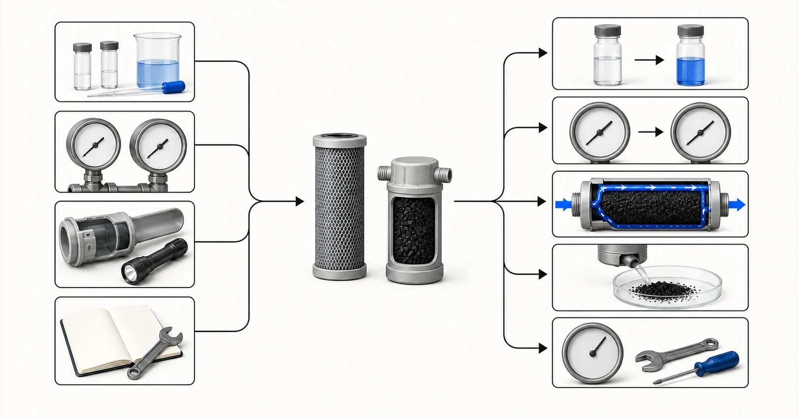

Câu trả lời trực tiếp
Việc thay thế bộ lọc than cần được thực hiện khi đạt tiêu chí theo cơ sở sử dụng đã được phê duyệt, không phải sau một số tháng áp dụng chung cho mọi trường hợp. Các dấu hiệu liên quan có thể bao gồm hợp chất mục tiêu xuyên qua lớp vật liệu và xuất hiện ở đầu ra, không còn đạt tiêu chí cảm quan đã được phê duyệt, thể tích nước đã xử lý, tổn thất áp suất, thay đổi lưu lượng, tình trạng vật liệu lọc, các sự kiện vệ sinh hoặc hướng dẫn đã được xác minh cho thành phẩm được chứng nhận. Việc xử lý sự cố bắt đầu bằng cách phân biệt cạn kiệt khả năng hấp phụ với tắc nghẽn thủy lực, dòng chảy ưu tiên trong lớp vật liệu, dòng đi vòng không qua vật liệu, hạt mịn, sự phát triển của vi sinh vật, sai sót lấy mẫu và thay đổi của nước ở phía trước công đoạn lọc. Yuchen Water có thể xem xét báo cáo về nước, lịch sử vận hành, chi tiết lõi lọc hoặc bình lọc và hồ sơ giám sát để hỗ trợ định hướng lựa chọn vật liệu và thay thế, nhưng chu kỳ sử dụng chính xác cần có bằng chứng cho nước, lưu lượng và cấu tạo thực tế.
Bắt đầu từ vấn đề của người mua
Phản ánh như mùi xuất hiện trở lại có thể cho thấy chất ô nhiễm đã xuyên qua lớp vật liệu, nhưng cũng có thể do một biến cố mới của nguồn nước, ô nhiễm ở phía sau công đoạn lọc, dòng đi vòng không qua vật liệu hoặc vấn đề lấy mẫu. Lưu lượng thấp có thể cho thấy tắc nghẽn thay vì cạn kiệt dung lượng hấp phụ. Hạt đen có thể xuất phát từ việc xả rửa ban đầu chưa đủ, các bộ phận giữ hạt bị hỏng hoặc lớp vật liệu bị xáo trộn. Coi mọi biểu hiện là cùng một sự cố sẽ gây lãng phí lõi lọc và có thể khiến rủi ro thực sự của hệ thống chưa được giải quyết.
Vì vậy, hồ sơ vận hành là một phần của bằng chứng về sản phẩm. Hãy ghi lại ngày lắp đặt, thông tin nhận dạng vật liệu lọc hoặc lõi lọc, lô hàng nếu có, việc xả rửa ban đầu, thể tích nước đã xử lý tích lũy hoặc ước tính, lưu lượng trung bình và lưu lượng đỉnh, áp suất trước và sau công đoạn, kết quả phân tích, hoạt động vệ sinh và các sự kiện bất thường của nguồn nước. Một chương trình thay thế hữu ích chuyển những hồ sơ này thành quy tắc hành động và duy trì vật liệu dự phòng sẵn có trước khi đạt ngưỡng kích hoạt thay thế.

- Chất mục tiêu lọt qua lớp hấp phụ hoặc nước nguồn thay đổi
- Hạn chế dòng chảy do tổn thất áp suất
- Vấn đề về dòng đi tắt hoặc đường dẫn dòng chảy
- Hạt than mịn hoặc hư hỏng bộ phận giữ vật liệu
- Vấn đề về nước lưu đọng hoặc vệ sinh
Hình minh họa khái niệm. Không phải kết quả thử nghiệm, chứng nhận sản phẩm hoặc bản vẽ kỹ thuật.
Cần cung cấp báo cáo và dữ liệu vận hành nào
Hãy gửi cả dữ liệu nước hiện tại và lịch sử sự cố. Hình ảnh có thể hỗ trợ đánh giá cấu tạo, nhưng không thay thế thông tin về thành phần hóa học, lưu lượng, áp suất và việc lấy mẫu.
- báo cáo nước nguồn và mọi thay đổi kể từ khi lắp đặt than
- hợp chất mục tiêu hoặc tiêu chí đánh giá cuối cùng và kết quả phân tích trước/sau xử lý
- ngày lắp đặt, thông tin nhận dạng lõi lọc hoặc vật liệu, lô sản xuất và thể tích nước đã xử lý nếu biết
- lưu lượng trung bình và cực đại, thời gian vận hành hằng ngày và các khoảng thời gian nước lưu đọng
- áp suất đầu vào và đầu ra hoặc xu hướng chênh áp
- hồ sơ xả rửa ban đầu, vệ sinh, rửa ngược và các hoạt động bảo trì khác
- tình trạng cặn ở phía trước và các dấu hiệu bất thường của thiết bị phía sau
- vị trí, phương pháp, thời điểm lấy mẫu và quy tắc thay thế hiện đang áp dụng
Báo cáo cần đủ mới để đại diện cho nguồn nước dự kiến và nên nêu ngày cùng vị trí lấy mẫu. Nếu nước thay đổi theo mùa, lô sản xuất hoặc trạng thái vận hành, hãy cung cấp khoảng biến động thay vì một kết quả được chọn cho thuận tiện. Nêu riêng mục tiêu nước sau xử lý cần đạt và kết quả phân tích hiện tại. Khi chưa biết một giá trị, hãy ghi rõ là chưa biết; một khoảng trống được thể hiện rõ an toàn hơn một con số phỏng đoán.
Thông tin thủy lực cần được xem xét cùng thông tin hóa học. Chỉ dùng lưu lượng trung bình có thể che khuất các đợt lưu lượng cực đại ngắn, chế độ vận hành gián đoạn và thời gian nước lưu đọng kéo dài. Cần xác nhận thời gian vận hành hằng ngày, nhu cầu cực đại, áp suất sẵn có, tổn thất áp suất cho phép, kích thước thiết bị và người chịu trách nhiệm giám sát, thay than. Những chi tiết này quyết định liệu một vật liệu vốn có vẻ phù hợp có thể được sử dụng trong hệ thống có thể vận hành và bảo trì hay không.
Cơ sở lựa chọn
Nếu hợp chất mục tiêu xuất hiện sau công đoạn than trong khi lưu lượng và áp suất vẫn bình thường, trước tiên hãy kiểm tra hiện tượng chất mục tiêu lọt qua lớp hấp phụ, tải lượng từ nước nguồn và việc lấy mẫu. Xác nhận rằng nồng độ đầu vào và các thành phần cạnh tranh không thay đổi, các mẫu đại diện cho đúng cổng lấy mẫu và phương pháp phân tích phù hợp. So sánh kết quả với ngưỡng cần hành động đã thống nhất; không chờ đến khi có thay đổi nhìn thấy được hoặc cảm nhận được bằng giác quan nếu người dùng không thể phát hiện chất mục tiêu một cách đáng tin cậy.
Nếu chênh áp tăng hoặc lưu lượng giảm, hãy kiểm tra việc kiểm soát chất rắn ở phía trước, tình trạng tắc lõi lọc, sự nén chặt của lớp vật liệu và vị trí van. Thay vật liệu hấp phụ mà không khắc phục tải lượng chất rắn có thể khiến sự cố nhanh chóng tái diễn. Nếu áp suất thấp bất thường đồng thời hiệu quả xử lý kém, hãy kiểm tra dòng đi tắt, các bộ phận làm kín, bộ phân phối bên trong, hiện tượng tạo kênh dòng hoặc tình trạng thiếu vật liệu. Việc kiểm tra bình và các quy trình cô lập an toàn phải tuân theo thiết kế thiết bị.
Nếu xuất hiện hạt mịn, hãy xem xét thông số kỹ thuật của hạt than, lưới giữ vật liệu, hư hỏng khi lắp đặt, quá trình vận chuyển, điều kiện xả rửa và rửa ngược. Nếu có mùi hoặc lo ngại về vi sinh sau thời gian nước lưu đọng, hãy xem xét việc vệ sinh, nhiệt độ, thời gian ngừng hoạt động và ô nhiễm ở phía sau. Than hoạt tính không phải là một chương trình khử trùng, và không nên tiếp tục vận hành một công đoạn đã cạn khả năng xử lý hoặc được bảo trì kém chỉ vì áp suất vẫn ở mức chấp nhận được.
Bối cảnh tiền xử lý, thiết bị và vận hành
Kế hoạch thay thế cần nêu rõ điều kiện kích hoạt thay thế thông thường, kết quả cảnh báo sớm, giới hạn sử dụng tối đa được phép nếu có căn cứ, người chịu trách nhiệm và hành động khi thiếu dữ liệu. Các lớp vật liệu công nghiệp bố trí nối tiếp trước–sau có thể áp dụng giám sát và luân chuyển vị trí, còn các chương trình quản lý lõi lọc có thể dựa vào thể tích nước đã xử lý, hướng dẫn đã được xác minh và kiểm tra định kỳ. Không nên sao chép cùng một chu kỳ thay thế giữa các địa điểm có chất lượng nước và nhu cầu khác nhau.
Sau khi thay thế, hãy ghi nhận vật liệu hoặc lõi lọc mới, xả rửa hoặc đưa vào vận hành theo quy trình đã được phê duyệt, thiết lập lại dữ liệu nền lấy mẫu và xác nhận áp suất cùng chất lượng nước. Sự cố sớm lặp lại là căn cứ để xem xét lại chuỗi công đoạn xử lý, chứ không chỉ đơn giản rút ngắn lịch thay thế. Yuchen Water có thể hỗ trợ cung cấp vật liệu thay thế, kiểm tra tính tương thích và xử lý sự cố thiết bị liên quan dựa trên hồ sơ được gửi.
Những sai lầm thường gặp
- Áp dụng một chu kỳ thay thế cho mọi loại nước nguồn và lưu lượng
- Chẩn đoán khả năng hấp phụ đã cạn chỉ dựa vào tổn thất áp suất
- Thay than mà không kiểm tra chất rắn ở phía trước hoặc dòng đi tắt trong hệ thống
- Bỏ qua tình trạng nước lưu đọng, vệ sinh và điều kiện sinh học
- Không ghi nhận lô vật liệu hoặc lõi lọc đã lắp đặt, thể tích nước đã xử lý và mẫu trước/sau xử lý
Bằng chứng và phạm vi dịch vụ
Không trang nội dung hay báo giá nào được cam kết tuổi thọ sử dụng khi chưa xác định đặc điểm nước, chất mục tiêu, vật liệu, cấu tạo, lưu lượng và tiêu chí kết thúc sử dụng. Phải tuân theo hướng dẫn đã được xác minh của nhà sản xuất dành cho sản phẩm hoàn chỉnh đối với chính sản phẩm đó; hướng dẫn này không tự động áp dụng cho một biến thể OEM. Chu kỳ sử dụng trong công nghiệp cần có căn cứ từ việc giám sát, bằng chứng liên quan hoặc các giả định thiết kế do người có chuyên môn xác lập.
Đánh giá kỹ thuật có thể xác định các dạng sự cố có khả năng xảy ra, dữ liệu còn thiếu và phương án thay thế, nhưng đánh giá từ xa không thể thay thế việc kiểm tra an toàn tại hiện trường. Đơn vị vận hành vẫn chịu trách nhiệm về cô lập thiết bị, thao tác xử lý, vệ sinh, lấy mẫu và đưa trở lại vận hành. Phạm vi của Yuchen Water là cung cấp vật liệu và hỗ trợ kỹ thuật thiết bị dựa trên thông tin nhận được.
Yuchen Water xem xét mục tiêu và bằng chứng trước, sau đó xác định dạng than phù hợp và những vấn đề về vật liệu cần làm rõ, nhu cầu tiền xử lý và thiết bị hỗ trợ, cùng những tài liệu hoặc thử nghiệm vẫn còn cần thiết. Kết quả có thể là định hướng sơ bộ, yêu cầu bổ sung thông tin hoặc khuyến nghị về vật liệu và thiết bị có cơ sở. Khuyến nghị không được đưa ra chỉ vì người mua đã cung cấp tên sản phẩm.
Sau khi cung cấp sản phẩm, hỗ trợ kỹ thuật có thể bao gồm xác nhận tài liệu, giải đáp về lắp đặt và súc rửa, hướng dẫn chạy thử đưa vào vận hành từ xa, các điểm giám sát và lập kế hoạch thay thế trong phạm vi đã thỏa thuận. Hiệu quả thực tế vẫn phụ thuộc vào vật liệu được phê duyệt, hệ thống thiết bị đầy đủ, nước nguồn, việc lắp đặt, vận hành và bảo trì. Hướng dẫn đã công bố không thể thay thế việc đánh giá dự án.
Không cam kết về vật liệu cuối cùng, dung lượng xử lý, tuổi thọ sử dụng, tỷ lệ loại bỏ hoặc kết quả dự án trước khi xem xét báo cáo, cấu tạo, bằng chứng và điều kiện vận hành.
Nguồn kỹ thuật chính thức
Các nguồn này giải thích nguyên lý xử lý hoặc giới hạn phạm vi chứng nhận. Các nguồn này không chứng nhận sản phẩm của Yuchen Water và không thay thế bằng chứng riêng cho từng dự án.
Hướng dẫn liên quan về than hoạt tính
Tiếp tục tìm hiểu nhóm tài liệu kiến thức, rà soát bằng chứng của các mẫu được chọn chỉ trong phạm vi giới hạn đã nêu, so sánh các dạng sản phẩm hoặc gửi báo cáo để đánh giá kỹ thuật.